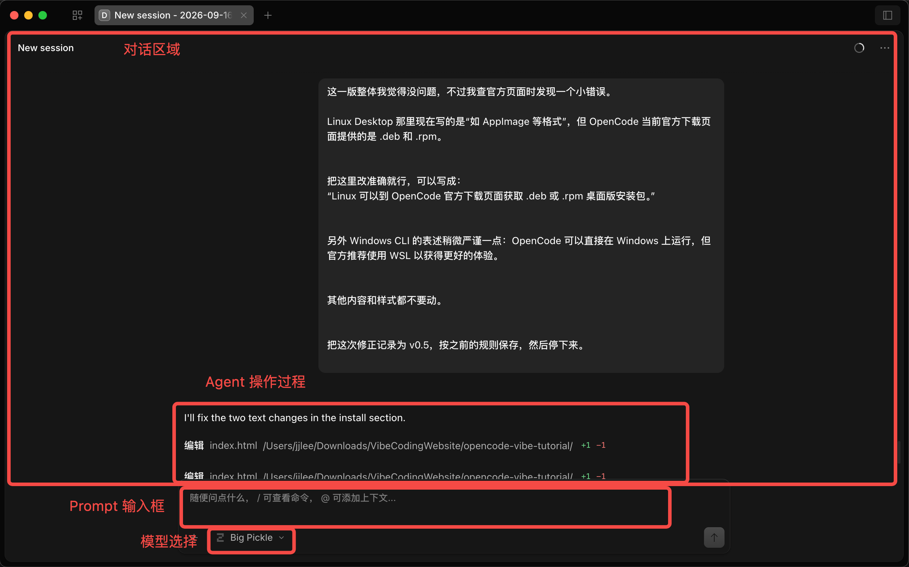

普通 AI Chat
- 我提出问题
- AI 给我代码或建议
- 我自己复制、修改、运行
OpenCode 是一个开源的 AI Coding Agent，可以通过终端、桌面应用或 IDE 使用。它能够进入真实项目，读取代码、修改文件、运行命令，并根据你的反馈继续迭代。
macOS 可以从 OpenCode 官方下载页面获取桌面版安装包，也可以用 Homebrew 一键安装。
brew install --cask opencode-desktop
提示：npm、Bun、Chocolatey、Scoop 等其他安装方式这里不逐一展开，需要时可以直接去官方安装页面查看。
这里以 Desktop App 为例。CLI 的核心工作方式也是类似的，只是对话发生在一个终端里。

对话区域
我和 OpenCode 沟通的地方。
Agent 的操作过程
可以看到它实际修改文件、执行任务。
Prompt 输入框
直接告诉它你想做什么。
模型选择
可以切换当前使用的模型。
Vibe Coding 不是"一句话生成完美软件"，而是一个不断沟通、判断和修改的迭代过程。
继续告诉它怎么改，再看看，不满意就再来——循环下去，而不是一次到位。
有明确想法时，可以描述得细一点：
只是想微调时，简单说一句就够了：
Prompt 没有固定的长度和写法：想法清楚，就描述得细一些；只想微调，一句话就够了。关键不是"写得短"，而是把自己真正想要的表达清楚。
你刚刚看的这个网站本身，也是我们用 OpenCode 一步一步 Vibe Coding 做出来的。
从空文件夹开始，经历了很多轮新增、调整和纠错。前面介绍 OpenCode Desktop 时用的那张截图，也来自这个网站的一次真实修改。
查看完整开发过程 →这就是这个网站真实的"出生过程"。下面的每一个版本窗口，都真的来自对应 Git tag 导出的历史版本——可以点击、滚动、亲自看看当时网站长什么样。
先搭出网站的第一版骨架
初始化整个项目：搭出 8 个章节的基础骨架，完成 Hero、导航和阅读进度条，风格深色简洁、带一点代码感，并初始化 Git 仓库。
▸ 读取项目目录，从空文件夹开始初始化
▸ 创建 HTML / CSS / JS 基础文件
▸ 搭建 8 个章节的占位骨架
▸ 完成 Hero 区域与"开始探索"按钮
▸ 添加 sticky 导航与阅读进度条
▸ 完成基础响应式适配，初始化 Git
开始加入 OpenCode 的介绍
实现「OpenCode 是什么」章节：用"普通 AI Chat vs AI Coding Agent"的对比让学生一眼看懂区别，再配一段简短的 OpenCode 介绍。
▸ 实现「OpenCode 是什么」章节
▸ 设计"普通 AI Chat vs AI Coding Agent"对比
▸ 加入编号步骤列表与 OpenCode 简介区块
▸ 适配 ≤768px / ≤480px 移动端
发现问题后回来修正
这两版整体没问题，但发现两个问题要修：OpenCode 介绍里"运行在终端里"不准确，需要改成可通过终端、桌面应用或 IDE 使用；另外 MAKING_OF 里的原始 Prompt 不能改写总结，没保存原文就标"待补充"，不要自己编。其他内容和样式都不要动。
▸ 修正 OpenCode 介绍表述（终端 → 终端 / 桌面 / IDE）
▸ 更新 MAKING_OF 记录规则：原始 Prompt 必须保留原文
做出「安装 OpenCode」章节：Tab 切换 + 可复制命令
实现「安装 OpenCode」章节：分 Desktop 和 CLI 两种方式，按 macOS / Windows / Linux 切换展示，安装命令可以一键复制，再放一个不抢眼的「查看官方安装页面」入口。不要堆所有安装方法，保持简单。
▸ 搭建第 3 章节「安装 OpenCode」
▸ 实现 Desktop / CLI × macOS / Windows / Linux 两层 Tab
▸ 加入可复制的安装命令与"已复制"反馈
▸ 放置「查看官方安装页面」入口
修正安装章节的两处表述
这版整体没问题，但查官方页面时发现一个小错误：Linux Desktop 不是 AppImage 等格式，而是 .deb 和 .rpm；另外 Windows CLI 的表述稍作严谨化。改这两处，其他内容样式都不要动。
▸ 修正 Linux Desktop 为 .deb / .rpm 安装包
▸ 严谨化 Windows CLI 关于 WSL 的说明
用真实截图标注「第一次使用」
实现「第一次使用 OpenCode」章节：用 assets 里的真实桌面截图做主体，标出四个第一次使用最需要认识的地方——对话区域、Agent 操作过程、Prompt 输入框、模型选择，并简单说明 CLI 工作方式类似。不要做成软件说明书。
▸ 以真实截图为主体，放置四个标注点
▸ 制作编号对照列表逐条解释
▸ 补充"Desktop 为例、CLI 类似"的说明
微调截图标注的位置
标注 2 稍微往下移一点，标注 4 放到左下角，标注 1 和 3 的位置差不多，可以不动。
▸ 标注 2（Agent 操作过程）下移
▸ 标注 4（模型选择）移至左下角
把 Vibe Coding 讲成一个迭代循环
实现「第一次 Vibe Coding」章节：不讲 Prompt Engineering，让学生理解"想法 → 告诉 OpenCode → 看结果 → 不满意继续改"的迭代循环，再配一个很短的对话小例子。这一节先不要透露这个网站也是用 OpenCode 做的。
▸ 设计"想法 → 告诉 → 看看 → 不满意"的循环图
▸ 加入"帮我做家乡小网页"的简短对话例子
▸ 结尾点题"这些 Prompt 就是正常说话"
修正"Prompt 写法"的表达
这节结尾"Prompt 不需要写得多复杂"容易被理解成 Vibe Coding 就该写短 Prompt。我想表达的是：Prompt 没有固定写法——想法清楚就描述详细一点，只想微调就一句话。按这个逻辑调整文案和例子，整体设计不要动。
▸ 标题改为"举个例子：Prompt 没有固定写法"
▸ 拆成"想法明确写细一点"与"微调一句话"两个场景
▸ 更新结尾点题表达
Surprise 改成进入 Making of 的自然过渡
做 Surprise 这一节，但不要做刻意的"惊喜揭晓"：直接告诉学生这个网站就是我们用 OpenCode 一步步 Vibe Coding 做出来的，前面 Desktop 截图也来自一次真实修改，加一个"查看完整开发过程 →"按钮。不要"等等""你发现了吗"这类文案，Making of 本体先不做。
▸ 换成进入 Making of 前的自然过渡文案
▸ 呼应前面真实截图来自本网站的一次修改
▸ 添加"查看完整开发过程 →"按钮，平滑滚动到 Making of
做出这个 "Making of" 页面本身
做一个 Making of 章节，像回放我们和 OpenCode 开发这个网站的过程：每个版本先给一句话总结，再展示真实对话窗口（Prompt 用简短摘要），最后用从 Git tag 导出的真实历史版本做网页预览。先做 v0.1～v0.3 验证，再补齐到 v0.10，并把这一版自己也放进来。
▸ 从 Git tag 导出 v0.1～v0.10 历史快照到 versions/
▸ 每个版本实现"一句话总结 + 对话窗口 + 真实预览"三部分
▸ 对话窗口里用简短摘要展示每轮的 Prompt